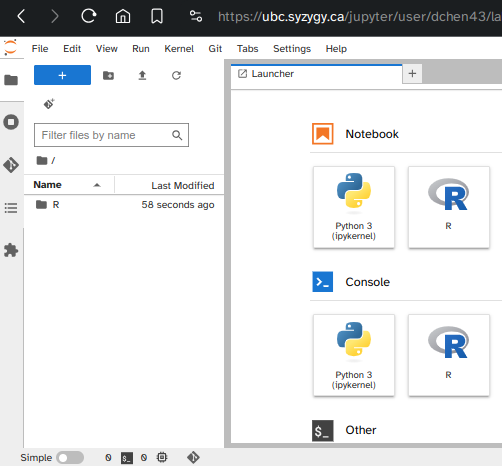
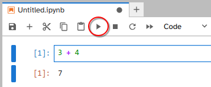
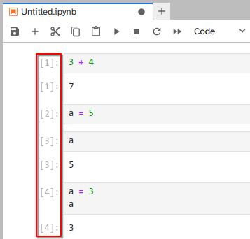
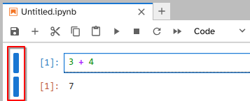
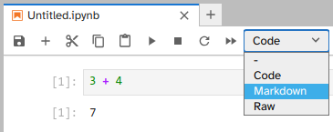
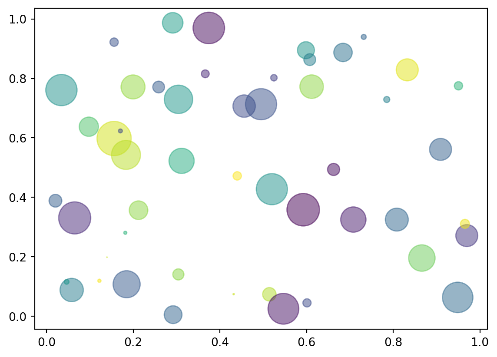
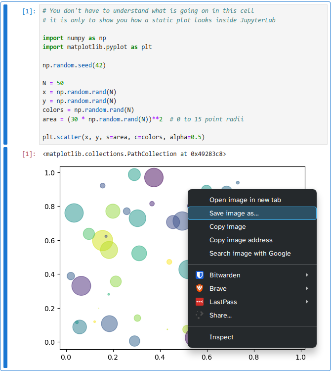
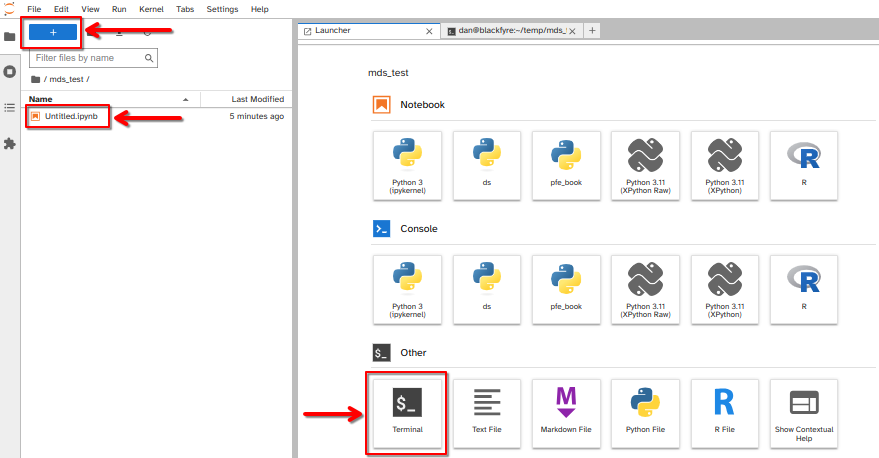
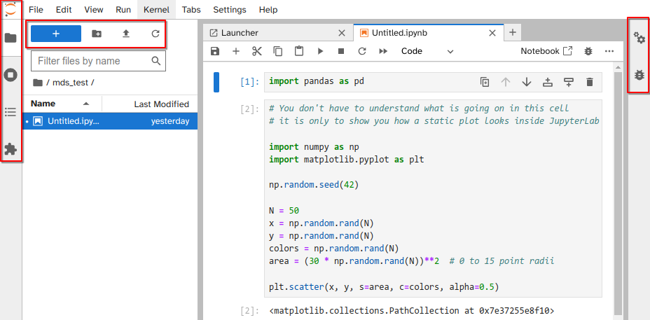

3 + 47Platform in focus Jupyter Lab
The most rudimentary interaction with programming languages such as R and Python is via interactive shells run from a terminal. This provides access to the full functionality of the language, but is a barebones experience without any conveniences added. If you want to edit a script or view a plot that you created, you need to open a text editor and image viewer separately.
If you prefer a more holistic experience, with many of conveniences nicely organized in the same interface, you can use an integrated development environment (or IDE for short). IDEs often include a shell, a file browser, debugging tools, version control, a text editor with autocompletion and syntax highlighting, and an area where plots show up. A core idea of IDEs is to provide all the tools you need in one place. Commons IDEs that you might have heard of include Visual Studio Code and RStudio. This lesson will discuss JupyterLab, which is and IDE to work with many programming languages, including R, Python, Julia, and many more. A core concept tightly linked to JupyterLab are Jupyter Notebooks, which will be one of the main topics in this talk. Let’s see how we can launch them.
You can access JupyterLab from an online remote server or a local machine.
We could install and run JupyterLab just like any other program on Windows, MacOS, or Linux. However, one of the advantages of JupyterLab is that it is easy to use without installing anything. To try JupyterLab, use your web browser to visit the UBC Jupyter Server and login with your CWL (Firefox, and Chrome are supported). You can also try JupyterLab through Project Jupyter (https://jupyter.org/try) or Posit Cloud (https://posit.cloud/).
If you have already completed the installation instructions, you can open the terminal and run:
JupyterLab will open in a browser whether you run it locally or you are using it through UBC server. Note that if you are running JupyterLab in your machine, the URL could be similar to https://localhost:8888/lab. In this case localhost is referring to your computer, not to a webpage.

We’re greeted by the launcher tab where we see that we can start either a Notebook or Console for Python or R, as well as some other utility programs. Let’s start by explaining one of the most popular options, the Jupyter Notebook. The Notebook provides and interface where you can mix text, code, mathematical expressions, plot output, videos, and more, all in the same file. So instead of the traditional IDE experience where you would write code in a text file and then have figures pop up in a different panel, this information now all resides in the same document, which facilitates reproducibility and collaboration. The Notebooks can be exported to many formats, including PDF and HTML, which makes it easy to share your project with anyone. The cell that is encircled in blue is where we can input Python code, click here and type any mathematical expression, and then run the cell by clicking the play button in the top toolbar:

As you can see, the output is returned just under input, and a new input cell was created. We could also have clicked the plus sign to create a new cell. Here, we can do anything we can do in Python, e.g. variable assignment:
There is no output because we just assigned a value to a variable, without asking for the value of that variable, which we can do by typing out the variable name:
Jupyter Notebooks also supports editing code on multiple lines, so we could have done this instead:

You might have noticed that there is a little counter on the left of each cell. This counter keeps track of in which order the cells were executed, so that you are aware if cells have been run out of sequential order. The counter symbol changes to an * when a computation is running, to indicate that Python is busy and won’t be able to execute new cells until the current one finishes (the delay is only noticeable for longer computations).
We can also click this blue bar to the left to collapse and expand the output and input. This can be handy if we have a long code cell, or some notes that we’re planning on moving later.

The notebook is saved automatically every two minutes, and it can be saved manually by clicking the floppy disk symbol in the toolbar, or by hitting Ctrl + s (Windows/Linux) or ⌘ + s (Mac). Both input and output cells are saved, so any plots that you make will be present in the notebook next time you open it, without needing to rerun the code cells.
Other important icons in the toolbar are the ones to cut, copy, and paste a cell. If you want to get rid of a cell, you can cut it out without pasting in back in.
The remaining icons are:
You can also access these by right clicking on a cell.
You can change the input cell type from Python code to Markdown by clicking on the little dropdown menu in the toolbar that reads Code.

Markdown is a simple formatting system which allows you to document your analysis within the notebook. This is also great for creating tutorials and even books as we will see later. It is a plain text format that includes brief markup tags that indicates how text should be rendered, e.g. * indicates italics and ** indicates bold typeface. If you have commented on online forums or used a chat application, you might already be familiar with markdown. Below is a short example of the syntax:
#### Markdown Example: Heading Level Four
- A bullet point
- *Emphasis in italics*
- **Strong emphasis in bold**
- This is a [link to learn more about markdown](https://guides.github.com/features/mastering-markdown/).
- Support for $\LaTeX$ equations:
$$f'(a) = \lim_{x \to a} \frac{f(x) - f(a)}{x-a}$$will be rendered as:
To practice creating a Markdown cell with a heading and repositioning it within the JupyterLab notebook interface.
In your JupyterLab notebook, add a new cell by clicking the “+” button in the toolbar.
Change the cell type to “Markdown” by selecting “Markdown” from the dropdown menu or using the shortcut Esc + M.
Type the following text in the Markdown cell:
This will create a first-level heading (h1) with the title “JupyterLab Tutorial.”
Shift + Enter or clicking the “Run” button. The text should now be formatted as a heading.To show an example of how plots are rendered, we will use the seaborn plotting package which is a high level interface to the more widely known matplotlib package. This is only to illustrate how plots show up in the notebook, rather than a tutorial on how to plot in Python, so I will not go into details on what these commands mean.
# You don't have to understand what is going on in this cell
# it is only to show you how a static plot looks inside JupyterLab
import numpy as np
import matplotlib.pyplot as plt
np.random.seed(42)
N = 50
x = np.random.rand(N)
y = np.random.rand(N)
colors = np.random.rand(N)
area = (30 * np.random.rand(N))**2 # 0 to 15 point radii
plt.scatter(x, y, s=area, c=colors, alpha=0.5)
The above is a static figure, which means an image is created and included in the notebook. To save this image, you can either use a save command in the plotting library or you can hold shift and right click. Just right clicking is the JupyterLab menu, but holding the shift key brings up the browser menu, which includes the common options for images such as open in new tab and save.

The combination of code, plots, and markdown is powerful. With these three elements, you can keep all your analysis code and interpretations in the same document, instead of spread across different files. Notebooks are excellent tools to build entire reports, since they can contain formatting such as a table of contents, links to sections and files, footnotes, images, bibliographies, and even videos, which we will learn more about later. There are a few ways we can export jupyter notebooks into a PDF file. The method will depend on which packages are successfully installed and working from the MDS installation instructions.
This will be our preferred way to create PDFs. In the terminal, go to where your notebook file is, and create a new terminal

In the terminal use the quarto render command and specify the output to pdf.
Note
The commands are case-sensitive, make sure you are typing the file exacatly as it is named.
You can also change the --to pdf to --to html, and any interactive figures will be retained.
You can export the notebook to different file types via File > Save and Export Notebook As... > PDF When you export to PDF for the first time on your own machine, you might be asked to download the Latex packages, which are needed to create the PDF.
An alternative to exporting to PDF via latex is to use the WebPDF option, File > Save and Export Notebook As... > WebPDF which makes the exported PDF have a more similar style to how the notebook looks in JupyterLab. If we would export this notebook to HTML, we would still retain the interactivity of the plots we created!
Now that you know the basics of how to work inside Jupyter Notebooks, let’s continue explorer the JupyterLab user interface.

Left sidebar
+ sign takes us back to the launcher menu where we startedRight sidebar
File -> Export notebook as.JupyterLab can run applications other than notebooks, e.g. there is a Python console, a text editor, and a terminal emulator. These can be opened via the launcher page or File --> New. Applications can be placed side by side by dragging and dropping their windows, so we could be running a terminal and notebook next to each other.
The Command palette enable users to invoke commands directly:
View --> Activate Command PaletteOne application that is especially helpful to run next to a notebook is the Contextual Help. This application displays documentation automatically as you type. When you’re using unfamiliar packages and functions, it is a good habit to leave the Contextual Help open next to the notebook. If you don’t like having a split screen, you can instead press Shift + Tab to bring up a help dialogue. JupyterLab also supports tab completion, you can start typing a name and then press tab to see suggestions to expand to. Additional help is available via the “Help” menu, which links to useful online resources (for example Help --> JupyterLab Reference).
Note about UBC Jupyter Server
All your files will be saved between restarts, but any Python packages you have installed yourself will be reset, so you need to contact UBC IT to have additional Python packages installed with persistence.